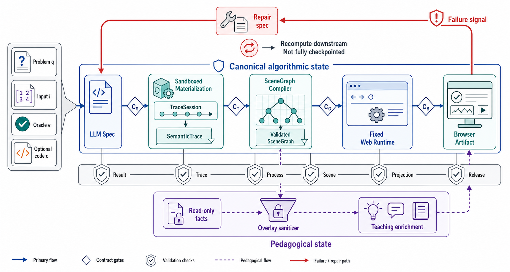
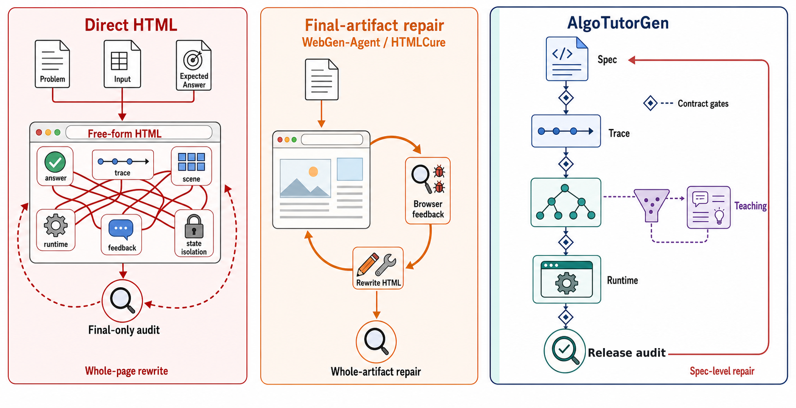

AlgoTutorGen本文方法
198/20099.0%
Contract-guided synthesis from executable specs to trustworthy browser artifacts.
Machine OK 要求九项浏览器行为同时成立——它是合取，不是平均分。选择任一指标，五种方法会在同一条 0–100% 轨道上重排证据。
101 个任务只有 AlgoTutorGen 通过，1 个只有 Direct 通过；exact McNemar p = 4.06e−29。
生成预算不同，因此这里比较统一浏览器合同下的冻结产物，不把它解释成通用网页 agent 排名。
| 方法 | Load | Answer | Interaction | Correct FB | Wrong FB | Hint | Show | Log | Mutation-free | Machine OK |
|---|---|---|---|---|---|---|---|---|---|---|
| AlgoTutorGen | 200 | 200 | 200 | 199 | 198 | 200 | 200 | 200 | 200 | 198 |
| Direct-BrowserRepair | 186 | 200 | 155 | 128 | 133 | 137 | 138 | 143 | 155 | 106 |
| Direct HTML | 188 | 200 | 149 | 120 | 125 | 132 | 133 | 135 | 149 | 98 |
| WebGen-Agent | 194 | 169 | 154 | 74 | 89 | 136 | 148 | 109 | 154 | 45 |
| Direct + HTMLCure（strict） | 75 | 75 | 62 | 52 | 51 | 53 | 53 | 59 | 62 | 40 |
答案、轨迹、场景、浏览器与教学行为不再挤在同一份自由 HTML 里。每个表示边界都有可执行 gate，每个失败都回到可修复的语义层。
执行 solve，标准化输出，并与 expected oracle 对齐。失败停在 spec 层，不把错误答案包装成网页。
294 个 artifacts 的跨表示帧保持 canonical algorithm state。
定义的语义违规全部被 gate 拒绝；392 个保持变换全部被接受。
240 个页面、24,000 条随机序列中观察到 0 个教学状态污染反例。


把答案、过程、界面与教学行为放在同一条可审计链上。
更多模型调用
长轨迹 HTML 与内存仍会膨胀
不声称真人学习效果